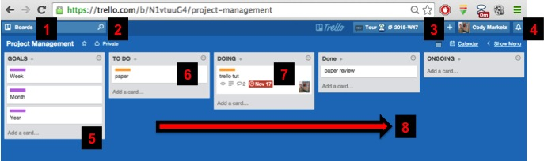
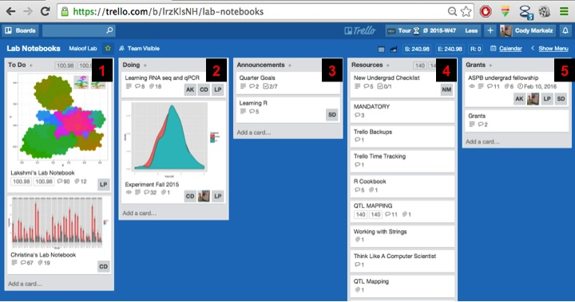

Introduction to Trello for Project Management
Motivation
This quick post is an example of my scientific and collaboration work flow using the free features of Trello. I have tried many different ways of organizing ideas and implementing GTD. Email is NOT a good way to organize projects, especially long term ones. Elaborate tag systems can help, but I found that it is more hassle than it is worth when there are other tools available. For a while I used The Secret Weapon. Even if you do not use TSW system you should still take a look at these videos to get into that mindset. However, I was spending a lot of time sending emails to people instead of creating new things. Trello is a much better option because it adds a great collaboration component along with a visual way to organize projects. It is browser based and I recommend that you use Chrome because it has some nice Add-ons. Here is a rapid introduction to my work flow with ideas taken from GTD and TSW.
 ##### FIGURE 1: Trello data has a hierarchy going Organizations –> Boards –> Lists –> Cards. Figure 1 is looking at a board I made for this tutorial.
- Here is where all the boards you are associated with are located.
- Search board for specific items or data.
- Open-source Trello time tracking app Plus
- Alerts. Will turn red when someone messages you or there is a change is made to a project you are “watching”. More on watching later.
- Boards are organized into Lists.
- Individual Cards are attached to Lists and can be moved around between Lists.
- Cards can have many things associated with them including due dates, people working on them, attachments etc. More on this in Figure 2.
- My general work flow is to have Lists consisting of GOALS, TO DO, DOING, DONE, and ONGOING. Cards move from right to left for each day. If it is a one off task then it gets moved to DONE and eventually archived. If it is part of a larger project then it gets moved to ONGOING when completed because the card might be used again for the same project. Cards only go into DOING if you actively working on them. This helps me focus and use the time tracking for this task. It is also a good time to block incoming email and other distractions so you can single-task.
##### FIGURE 2: When you click on a card it flips it over for more details on the “back” of the card.
- Members associated with the card. Excellent for collaboration and responsibility for to-do items on the card.
- Color labels to help visually orient you in boards with many cards.
- Due dates. These can sink with google calendar.
- Card description. Usually I keep this sparse.
- Checklists. Shows progress for each item. Cards can have multiple checklists.
- Plus time tracking for each card. Click this to start timer working on this card.
- Comments. Update progress post working on the tasks associated with this card. I generally include what I did and what should be done the next hour of work on this project. This helps when picking the project back up after a while. Attach items (.csv, images, papers, etc.) to the card using your hard drive, Dropbox, Google Drive, or from a weblink. Integrates youtube videos for example.
- Referring to cards within boards with the link to the card. Also useful is an email address for each card. Attach that address when dealing with email and it will forward to the card.
- Comments are great for communicating because you can tag people by their user name.
- All the items on this card are tracked. Not only comments, but also movements between lists.
###### FIGURE 3
- Click on the menu bar where you will see a history of the entire board along with some options.
- Add members to the board.
- You can filter the cards you see by their color tag. This helps if it gets too crazy on a board. This is where you add the calendar integration and card aging power ups.
FIGURE 4 Here is a reduced view of my personal project board.
- Plus time tracking. Click here for time spent on each board, reports, and all these other awesome features of how you spend your time.
- View the board as a calendar with all the due dates displayed.
- Timing is only on for current task: Trello Tutorial on my Website card.
- Card aging. A nice visual way to see what projects you have not touched for a while. This feature helps when reviewing goals and prioritizing the week.
 ###### FIGURE 5: This is what a collaborative board looks like. This is my undergrad’s lab notebooks and is organized a little differently than my personal work flow. Digital is nice because you can search the content. At the end of the quarter paper notebooks are scanned and attached to the notebook cards. This is where Trello really shines because it is flexible in communication and what can be associated with each card. For example, I take pictures of ideas in notebooks and white boards to post to Trello with some key words that make these ideas easily indexed.
- Individual student lab notebooks.
- Collaborative learning projects we are working on.
- Announcements for goals, expectations, etc.
- Resources. Comes in handy when new undergrad joins to get them up to speed quickly.
- Grants and longer term goals.
Backups
I backup my trello data once a week into a private repository using this script
File Sharing
We have joint Box accounts through our university for file sharing. No need to attach huge items to cards. Just link them to shared storage. These shared folders are also where all the boards are backed up and version controlled.
iOS Support
Trello has an iOS App that I use to check up on things, send small messages, and add notes on the go.
December 3, 2015 Update
You can also integrate Trello with Slack. Slack allows easy (free) access to github repositories. Currently you have to pay for that using Trello.
Mike Covington Pointed me to another Chrome plug-in, Elegantt, for nice visual summaries of project time-lines, overviews, and 100 foot views of projects.
When researching slack integration I came across this post for managing REALLY large projects using Trello. It describes many of the same things above but for a much larger organization. Worth a read.